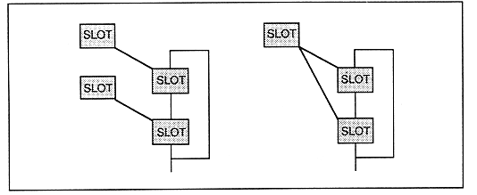
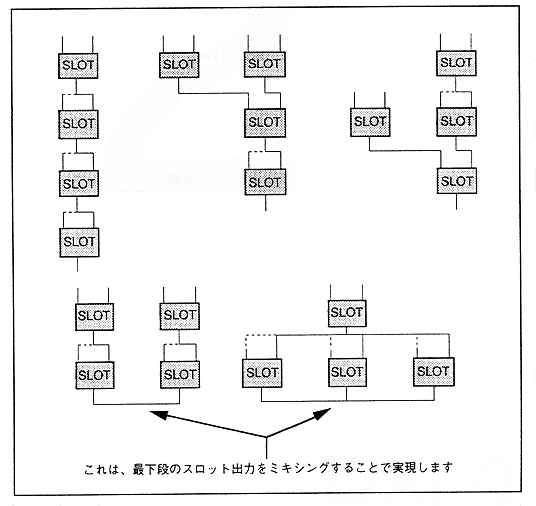

Figure 4.47 and Figure 4.48 show specific examples of basic FM configuration. Please refer to it for FM speech synthesis. The upper two lines of each slot represent the modulation input, and the lower line represents the slot output.
Also, in Fig. 4.47 and Fig. 4.48, it seems that only one slot is connected to each other, so actually connect the broken line as well.
Figure 4.47 FM configuration algorithm pattern 1
